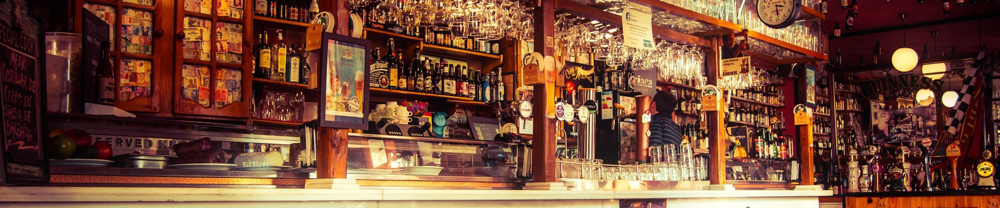

Depuis près de 20 ans, nous nous efforçons a réalisé une cuisine de plus en plus élaborée dans un esprit authentique. Notre établissement est avant tout un lieu e retrouvaille où nos clients peuvent se retrouver autour d'une cuisine traditionnelle dans un décor authentique. Notre carte évolue tous les semestres en fonction de vos goûts et de vos recommandations tout en gardant les plats les plus appréciés de nos clients.
Niché au coeur de la métropole parisienne, notre restaurant vous accueil dans un cadre traditionnel. Situé proche de la station de métro Bonne Nouvelle et Le grand Rex vous pourrez manger tout en étant à proximité du boulevard du plus grand cinéma d'europe